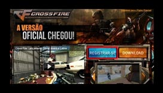

<!DOCTYPE html PUBLIC "-//W3C//DTD XHTML 1.0 Strict//EN" "http://www.w3.org/TR/xhtml1/DTD/xhtml1-strict.dtd">
<html xmlns="http://www.w3.org/1999/xhtml" lang="en-US"></html>
<head profile="http://gmpg.org/xfn/11">
  <meta http-equiv="X-UA-Compatible" content="IE=edge"/>
  <meta http-equiv="Content-Type" content="text/html; charset=UTF-8"/>
  <title>Getting Started «  Crossfire Español</title>
  <link rel="stylesheet" href="http://es.crossfire.z8games.com/wp-content/themes/default_theme/css/vendor/normalize.css" type="text/css" media="screen"/>
  <link rel="stylesheet" href="http://es.crossfire.z8games.com/wp-content/themes/default_theme/css/vendor/reset.css" type="text/css" media="screen"/>
  <link rel="shortcut icon" href="http://images.z8games.com/cfes/wp-content/themes/cfes/favicon.ico"/>
  <link rel="alternate" type="application/rss+xml" title="Crossfire Espanol RSS Feed" href="http://es.crossfire.z8games.com/feed/"/>
  <link rel="alternate" type="application/atom+xml" title="Crossfire Espanol Atom Feed" href="http://es.crossfire.z8games.com/feed/atom/"/>
  <link rel="pingback" href="http://es.crossfire.z8games.com/xmlrpc.php"/>
  <script src="http://es.crossfire.z8games.com/wp-content/themes/default_theme/js/vendor/modernizr-2.6.2.min.js"></script>
  <script src="http://es.crossfire.z8games.com/wp-content/themes/default_theme/js/vendor/selectivizr-min.js"></script>
  <link id="js_composer_front-css" rel="stylesheet" href="http://es.crossfire.z8games.com/wp-content/plugins/js_composer/assets/css/js_composer_front.css?ver=3.7.4" type="text/css" media="all"/>
  <link id="js_composer_custom_css-css" rel="stylesheet" href="http://es.crossfire.z8games.com/wp-content/uploads/js_composer/custom.css?ver=3.7.4" type="text/css" media="screen"/>
  <link id="dt_colorbox_modal_style-css" rel="stylesheet" href="http://images.z8games.com/cfes/wp-content/themes/default_theme/css/colorbox.css?ver=3.8.1" type="text/css" media="all"/>
  <link id="dt_jquery_ui_style-css" rel="stylesheet" href="http://images.z8games.com/cfes/wp-content/themes/default_theme/css/jquery-ui.min.css?ver=3.8.1" type="text/css" media="all"/>
  <link id="dt_jscrollpane_style-css" rel="stylesheet" href="http://images.z8games.com/cfes/wp-content/themes/default_theme/css/jquery.jscrollpane.css?ver=3.8.1" type="text/css" media="all"/>
  <link id="dt_slippry_style-css" rel="stylesheet" href="http://images.z8games.com/cfes/wp-content/themes/default_theme/css/jquery.slippry.css?ver=3.8.1" type="text/css" media="all"/>
  <link id="dt_module_content_style-css" rel="stylesheet" href="http://images.z8games.com/cfes/wp-content/themes/default_theme/css/content/module_content.css?ver=3.8.1" type="text/css" media="all"/>
  <link id="dt_module_front_style-css" rel="stylesheet" href="http://images.z8games.com/cfes/wp-content/themes/default_theme/css/module/module_front.css?ver=3.8.1" type="text/css" media="all"/>
  <link id="dt_module_shortcuts_style-css" rel="stylesheet" href="http://es.crossfire.z8games.com/wp-content/themes/default_theme/css/module/post_shortcuts.css?ver=3.8.1" type="text/css" media="all"/>
  <link id="dt_module_social_media_style-css" rel="stylesheet" href="http://es.crossfire.z8games.com/wp-content/themes/default_theme/css/module/social_media.css?ver=3.8.1" type="text/css" media="all"/>
  <link id="dt_video_style-css" rel="stylesheet" href="http://images.z8games.com/cfes/wp-content/themes/default_theme/css/video.css?ver=3.8.1" type="text/css" media="all"/>
  <link id="dt_module_video_style-css" rel="stylesheet" href="http://images.z8games.com/cfes/wp-content/themes/default_theme/css/module/video.css?ver=3.8.1" type="text/css" media="all"/>
  <link id="dt_module_post_content_style-css" rel="stylesheet" href="http://es.crossfire.z8games.com/wp-content/themes/default_theme/css/module/post_content.css?ver=3.8.1" type="text/css" media="all"/>
  <link id="dt_module_post_tabs_style-css" rel="stylesheet" href="http://es.crossfire.z8games.com/wp-content/themes/default_theme/css/module/post_tabs.css?ver=3.8.1" type="text/css" media="all"/>
  <link rel="stylesheet" href="http://fonts.googleapis.com/css?family=Open+Sans:400,600,700" type="text/css"/>
  <link id="cfes_main_style-css" rel="stylesheet" href="http://images.z8games.com/cfes/wp-content/themes/cfes/css/main.css?ver=3.8.1" type="text/css" media="all"/>
  <link id="cfes_jqueryu_style-css" rel="stylesheet" href="http://images.z8games.com/cfes/wp-content/themes/cfes/css/custom-theme/jquery-ui-1.10.4.custom.css?ver=3.8.1" type="text/css" media="all"/>
  <link id="dt_slider_style-css" rel="stylesheet" href="http://images.z8games.com/cfes/wp-content/themes/default_theme/css/slider.css?ver=3.8.1" type="text/css" media="all"/>
  <link id="dt_child_stylesheet-css" rel="stylesheet" href="http://es.crossfire.z8games.com/wp-content/themes/cfes/style.css?ver=3.8.1" type="text/css" media="all"/>
  <link id="dt_user_system_style-css" rel="stylesheet" href="http://es.crossfire.z8games.com/wp-content/themes/default_theme/css/users/system.css?ver=3.8.1" type="text/css" media="all"/>
  <link href="css/newStyles.css" rel="stylesheet"/>
</head>
<body>
  <div id="newContent">
    <ul class="tabs tab-count-4">
      <li class="tab active"><a href="#" class="tab-link">Getting Started</a></li>
      <li class="tab"><a href="interface-1.html" class="tab-link">Interface</a></li>
      <li class="tab"><a href="control-1.html" class="tab-link">Control</a></li>
      <li class="tab last"><a href="setting-1.html" class="tab-link">Setting</a></li>
    </ul>
    <ul class="subtabs tab-count-4">
      <li class="subtab"><a href="getting-started-1.html" class="subtab-link">Registro</a></li>
      <li class="subtab"><a href="getting-started-2.html" class="subtab-link">Inicio Del Juego</a></li>
      <li class="subtab active"><a href="#" class="subtab-link">Inicio Del Juego</a></li>
      <li class="subtab"><a href="getting-started-4.html" class="subtab-link">Deinstalar</a></li>
    </ul>
    <ul class="article-list">
      <li class="article-list-item">
        <div class="article-list-text">
          <h2 class="article-list-item-title">1er PASO</h2>
          <p>Registro: Busque el icono del juego en el escritorio o en la carpeta de instalación y haga doble clic sobre él.</p>
        </div>
      </li>
      <li class="article-list-item">
        <div class="article-list-text">
          <h2 class="article-list-item-title">2º PASO</h2>
          <p>Una vez que haya hecho clic en el icono de Cross Fire, se abrirá la ventana del lanzador del juego. Haga clic en "Inicio".</p>
        </div>
      </li>
      <li class="article-list-item">
        <div class="article-list-text">
          <h2 class="article-list-item-title">3er  PASO</h2>
          <p>El juego comenzará a cargarse automáticamente. Una vez cargado, por favor introduzca su información de acceso en los campos "Cuenta" y "Contraseña" (es la información con la que se registró en la página web de Cross Fire). Haga clic en "Aceptar" para continuar.</p>
        </div>
      </li>
      <li class="article-list-item">
        <div class="article-list-text">
          <h2 class="article-list-item-title">4º PASO</h2>
          <p>Al hacer clic en "Ok" entrará al Vestíbulo de Servidores donde aparecerá una ventana para crear un nombre para su soldado. Elija el nombre que desee y haga clic en "confirmar". Si el nombre ya está en uso se mostrará un mensaje indicando que el nombre no está disponible. Tras escoger un nombre válido, haga clic en "Aceptar".</p>
        </div>
      </li>
      <li class="article-list-item">
        <div class="article-list-text">
          <h2 class="article-list-item-title">5º PASO</h2>
          <p>Después de confirmar el nombre de su soldado será conducido al Vestíbulo de Servidores donde podrá elegir el servidor en el que desee jugar. El color amarillo de los servidores indica que usted no puede acceder a ellos por no tener el rango adecuado o no pertenecer a ningún clan. </p>
        </div>
      </li>
      <li class="article-list-item">
        <div class="article-list-text">
          <h2 class="article-list-item-title">6º PASO</h2>
          <p>Después de confirmar el nombre de su soldado será conducido al Vestíbulo de Servidores donde podrá elegir el servidor en el que desee jugar. El color amarillo de los servidores indica que usted no puede acceder a ellos por no tener el rango adecuado o no pertenecer a ningún clan. </p>
        </div>
      </li>
      <li class="article-list-item">
        <div class="article-list-text">
          <h2 class="article-list-item-title">7º PASO</h2>
          <p>Una vez haya comprado las armas y los artículos necesarios para equipar a su soldado aparecerá un mensaje con la opción de ir al campo de entrenamiento. Este entrenamiento es opcional y usted puede elegir no realizarlo y proceder directamente al juego.</p>
        </div>
      </li>
      <li class="article-list-item">
        <div class="article-list-text">
          <h2 class="article-list-item-title">8º PASO</h2>
          <p>Si decide realizar el entrenamiento, un tutorial le guiará a través de los movimientos básicos del juego. Si prefiere optar por no completar el entrenamiento, haga clic en "Cancelar", y accederá al Lobby de Canales. Seleccione un canal y haga doble clic sobre él para entrar o haga clic en "Acceder".</p>
        </div>
      </li>
      <li class="article-list-item">
        <div class="article-list-text">
          <h2 class="article-list-item-title">9º PASO</h2>
          <p>Después de entrar en un canal accederá al Lobby del mismo, donde podrá ver varias salas. Las salas azules son habitaciones que están a la espera para iniciar una partida, las salas rojas son las habitaciones que se encuentran en mitad de una partida y las grises son las habitaciones que actualmente están llenas. Puede crear una nueva sala haciendo clic en "Crear Sala". Deberá elegir el modo de juego, el nombre de la sala, la contraseña (opcional) y otras opciones. Una vez seleccionadas las opciones básicas de la sala haga clic en "Aceptar". </p>
        </div>
      </li>
      <li class="article-list-item">
        <div class="article-list-text">
          <h2 class="article-list-item-title">10º PASO</h2>
          <p>Si usted es el administrador de la sala podrá editar las opciones de la misma, que se encuentran en la parte superior izquierda de la pantalla. Se sabe quién es el administrador gracias a que este tendrá una pequeña estrella verde junto a su nombre.  Para saber qué jugadores están ya en el juego, busque una letra “P” a la derecha de cada nombre; esta letra “P” indica qué jugadores están jugando. Puede elegir jugar tanto como miembro de Black List como de Global Risk; para ello tan solo haga clic en el lado del bando del que desee formar parte. Para terminar, haga clic en "Unirse a la Partida".</p>
        </div>
      </li>
    </ul>
  </div>
</body>